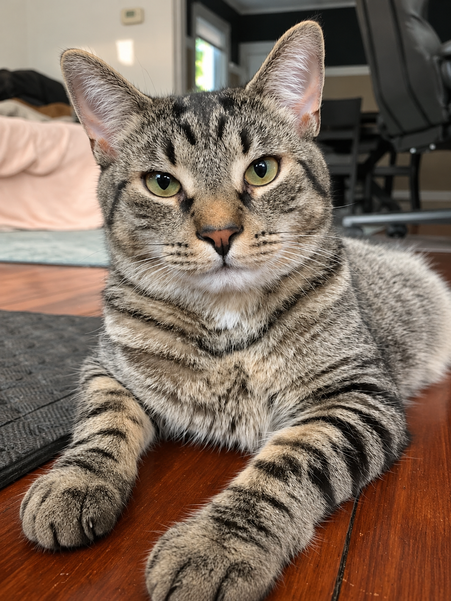
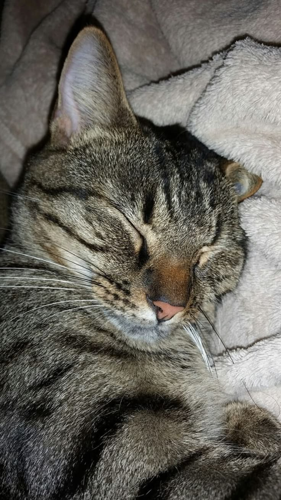
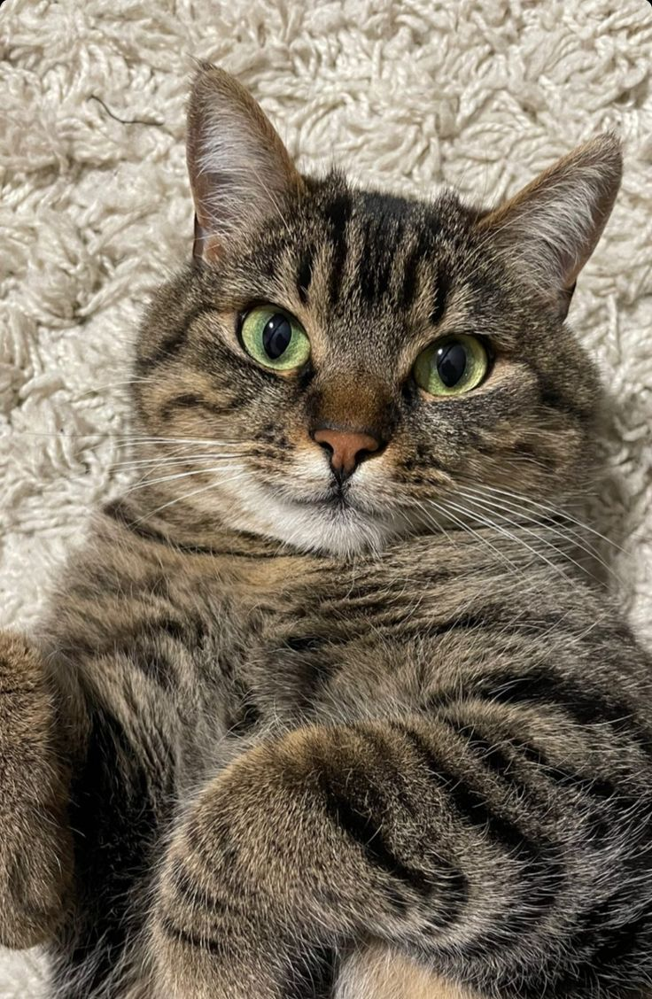
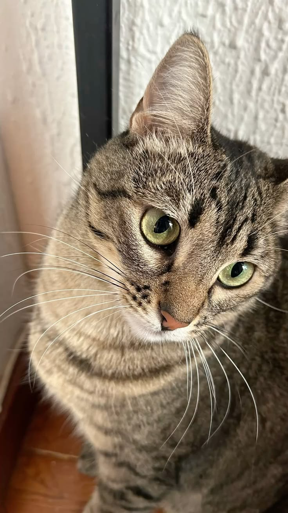
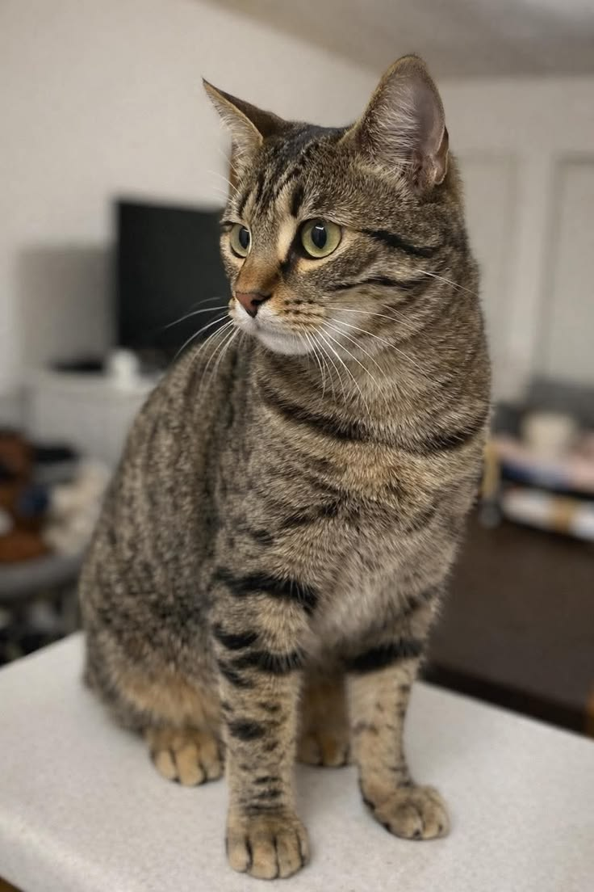

Volver al catálogo
Disponible
Conoce a tu próximo compañero
Luna
Gata atigrada · 1 año · Tamaño pequeño · San José





La historia de Luna
Luna es una gata atigrada que busca un espacio tranquilo donde sentirse acompañada. Para este prototipo la presentamos como una mascota observadora, cariñosa y con ganas de descubrir su nuevo hogar.
Esta descripción contiene datos de ejemplo para el prototipo académico de PetMatch CR.
Características
EspecieGato
RazaNo especificada
Edad1 año
TamañoPequeño
UbicaciónSan José
EstadoDisponible